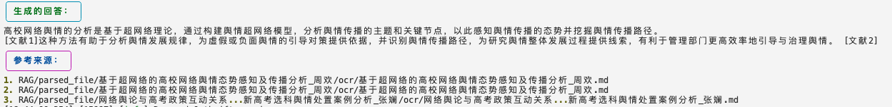

我们希望RAG的幻觉减少，最有力的证明就是关键句子参考的某篇文献或报告。然而，大模型的随机性导致提供的引文可能都不存在，所以直接让大模型输出的方式目前是不可靠的。下面总结下添加引文的常见方法。
一、外面加上引文
最直接和最简单的方法。当使用检索到的chunk时，就直接把这些chunk的元数据引用。
优点：简单，直接。 缺点：检索到的不一定支持回答。
# 美化参考来源标题
console.print(Panel.fit("[bold blue]参考来源：[/bold blue]", style="magenta"))
# 美化参考来源列表
if rerank_res.file_path.tolist():
for idx, file in enumerate(rerank_res.file_path.tolist(), start=1):
console.print(f"[yellow]{idx}. [/yellow]{file}")
else:
console.print("[red]没有找到参考来源。[/red]")
效果展示：
二、提示词方法
在提示词里要求大模型在每个关键陈述后加上相应的引用ID，类似论文一样。
优点：可以提供快速实现的原型。 缺点：依赖于大模型的生成能力，很容易出现乱引用，不引用等情况。
效果展示：
三、函数调用
通过定义特定的函数来处理引用。langchain链接 类似于第一种方式的精细版，毕竟只有真正用到了参考文献才能说引用。 但langchain的代码封装地太厉害，自己实现更好理解。
优点：能保证都有引用。 缺点：需要大模型支持JSON格式。token消耗高。
文档级别的引用
流程： 1.定义格式化输出，既有答案还有引用。 2.传入格式化的文档列表，包含id，content等。 3.调用大模型，解析返回的JSON。
代码实现：
@dataclass
class Document:
doc_id: int
chunk_content: str
image_text: str
source: str = ""
class CitedAnswer(BaseModel):
"""基于给定文献回答用户问题，并引用使用的文献。"""
answer: str = Field(
...,
description="基于给定文献的用户问题的回答。",
)
citations: List[int] = Field(
...,
description="用于回答的具体文献的整数 ID。",
)
def create_documents(df: pd.DataFrame) -> List[Document]:
"""从df创建Document"""
documents = []
for idx, row in df.iterrows():
documents.append(Document(
doc_id=row['文献'], # 使用 DataFrame 的索引作为唯一 ID
chunk_content=row['chunk_content'],
image_text=row.get('image_text',''),
source=row.get('title', '') # 假设有 'title' 列，否则为空
))
return documents
def format_docs_with_id(docs: List[Document]) -> str:
"""转文献列表为str，方便写入提示词"""
formatted = [
f"文献 ID: {doc.doc_id}\n内容: {doc.chunk_content}\n图片描述: {doc.image_text}"
for doc in docs
]
return "\n\n".join(formatted)
def extract_json(response_content: str) -> str:
"""
从响应内容中提取 JSON 字符串，无论是否包含代码块。
"""
# 使用正则表达式匹配 JSON 对象
json_pattern = re.compile(r'\{.*\}', re.DOTALL)
match = json_pattern.search(response_content)
if match:
return match.group(0)
else:
return response_content # 如果没有匹配，返回原始内容
def generate_cited_answer(question: str, docs: List[Document]) -> CitedAnswer:
formatted_docs = format_docs_with_id(docs)
prompt = f"""
你是一个基于提供的文献回答用户问题的助手。请仅基于以下文献内容回答问题，并在回答中引用相关文献。请以 JSON 格式输出答案和引用的文献 ID，格式如下：
{{
"answer": "你的回答。",
"citations": [引用的文献 ID 列表]
}}
### 问题:
{question}
### 文献:
{formatted_docs}
### 回答:
"""
client = OpenAI(api_key="", base_url="https://api.deepseek.com")
response = client.chat.completions.create(
model="deepseek-chat",
messages=[
{"role": "system", "content": "你是一个有帮助的助手。"},
{"role": "user", "content": prompt}
],
temperature=0, # 设置为 0 以获得确定性输出
max_tokens=500,
stop=None
)
# 提取模型回复的内容
response_content = response.choices[0].message.content
# 提取 JSON
json_str = extract_json(response_content)
try:
# 解析 JSON
result = json.loads(json_str)
cited_answer = CitedAnswer(**result)
return cited_answer
except json.JSONDecodeError:
print("无法解析模型的 JSON 响应。")
print("模型响应内容:", response_content)
return None
效果展示：
片段级别的引用
与上述相比，增加了一个数据组织结构。要求引用的是片段。 首先看看检索到的文档内容：
这是个文段，里面有很多条句子。 经过句子级别引用后的结果，可以看到大模型自己识别出了对回答问题有益的片段。
关键代码：
# 片段引用
class Citation(BaseModel):
source_id: int = Field(
...,
description="The integer ID of a SPECIFIC source which justifies the answer.",
)
quote: str = Field(
...,
description="The VERBATIM quote from the specified source that justifies the answer.",
)
class QuotedAnswer(BaseModel):
"""Answer the user question based only on the given sources, and cite the sources used."""
answer: str = Field(
...,
description="The answer to the user question, which is based only on the given sources.",
)
citations: List[Citation] = Field(
..., description="Citations from the given sources that justify the answer."
)
prompt = f"""
你是一个基于提供的文献回答用户问题的助手。请仅基于以下文献内容回答问题，并在回答中引用相关文献。请以 JSON 格式输出答案和引用的文献 ID，格式如下：
{{
"answer": "你的回答。",
"citations": [
{{
"source_id": 1,
"quote": "引用内容1。"
}},
{{
"source_id": 2,
"quote": "引用内容2。"
}}
]
}}
### 问题:
{question}
### 文献:
{formatted_docs}
### 回答:
"""
四、检索后处理
思想：检索后，对文档进行处理，提取最相关的部分作为引用。 流程： 1.文档拆分：递归文档拆分。 2.文档压缩：使用嵌入模型为每个小块生成嵌入，并选择与查询最相似的前k个小块。 3.生成：将压缩后的文档（最相似的几个小块），拼接起来，作为上下文。 4.引用：这样就能精细化定位到每个小块，直接引用对应文档或者片段。
优点：能更具关键信息支持。 缺点：增加了流程，时间消耗比较高。
五、生成后处理
思想：先生成答案，二次调用大模型添加引用。 流程： 1.生成答案：调用大模型得到纯文本的答案。 2.生成引用：二次调用生成引用。
优点：成功率高，幻觉低。 缺点：时间和token消耗高，依赖大模型，仍然存在幻觉。
效果展示：
六、后挂载处理
思想：大模型生成后处理，但不依赖大模型，而是依赖相似度计算。这是和第四种方法的区别。 思路： 1.生成：大模型生成回答。 2.添加输出：计算回答中每个句子与参考文献的相似度，如果高于阈值，就在这个句子后添加引用。
优点：大模型专注生成回答，可能有助于回答质量提升。减低引用幻觉。 缺点：不能一次生成，增加时间消耗。
效果展示： 
参考
https://www.xiaoiluo.com/article/citation-langchain-post-processing https://python.langchain.com/docs/how_to/qa_citations/#retrieval-post-processing https://github.com/run-llama/llama_index/blob/main/llama-index-core/llama_index/core/query_engine/citation_query_engine.py